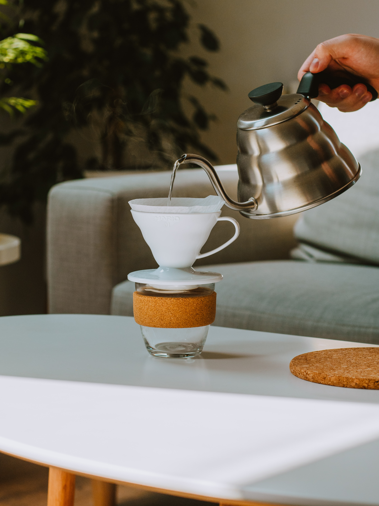
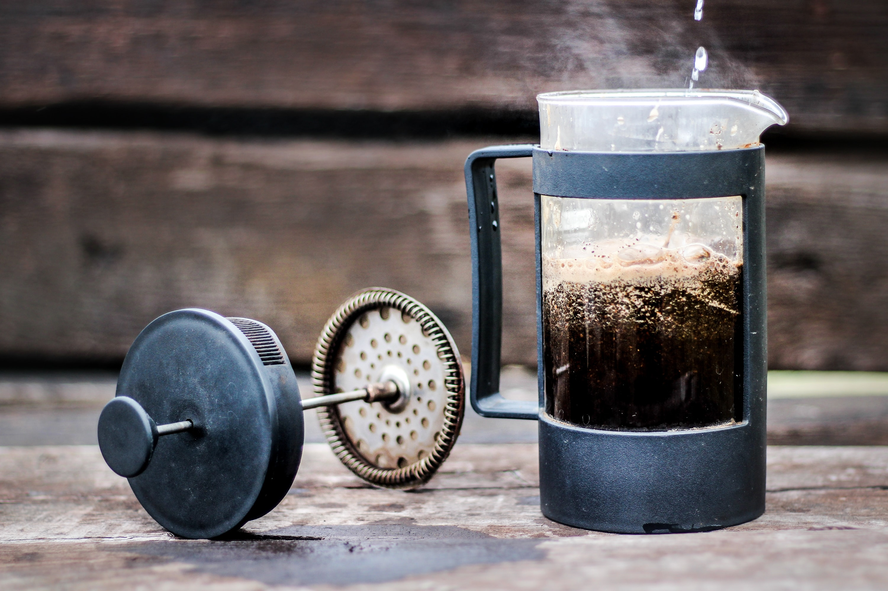
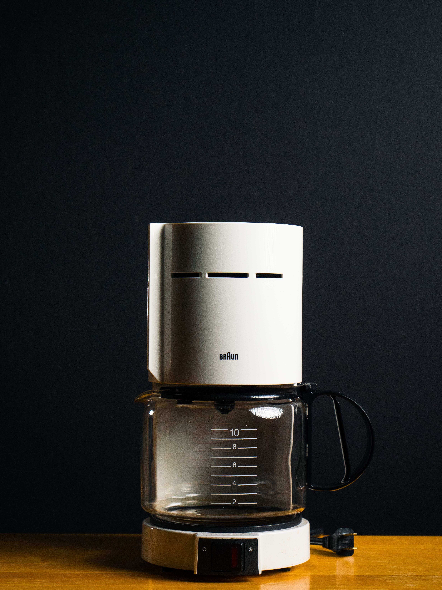
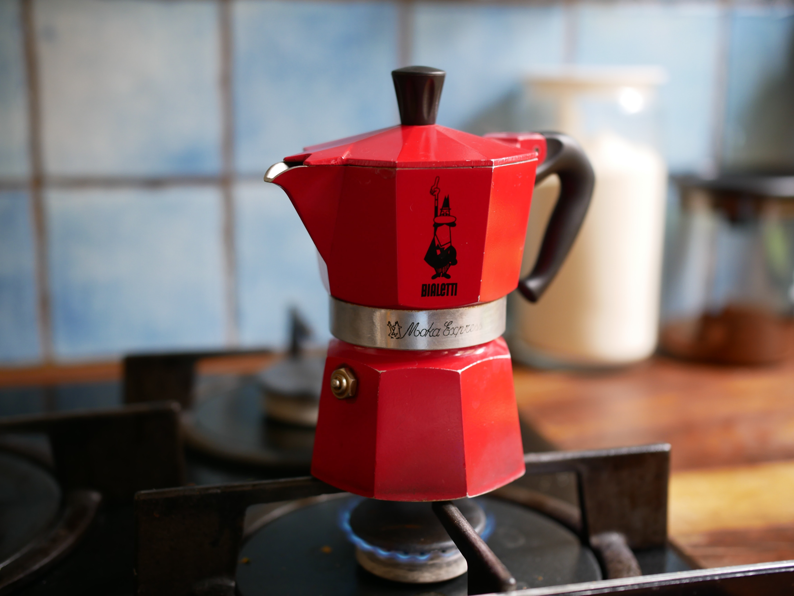

Methods
Home

Pour Over
The pour over is done by pouring hot water over coffee grounds so that it may extract the coffee into a vessel through paper.

French Press
The french press method is done by pouring hot water and grounds into a device where the grounds are plunged through the water to the bottom

Drip Coffee
Drip coffee is made by forcing hot water up onto grinds in a filter, where it drains into a pot

Bialetti
The bialetti device is heated up on the stove top, where hot water boils through a fine coffee grind, leaving hot espresso-like coffee
Espresso
Espresso machines force hot water through finely ground coffee